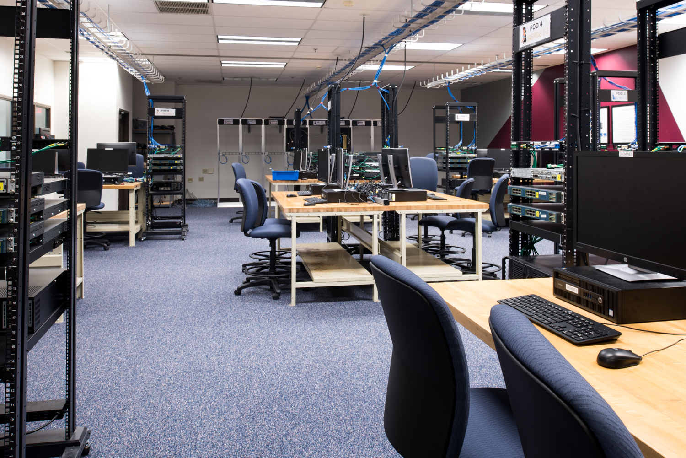
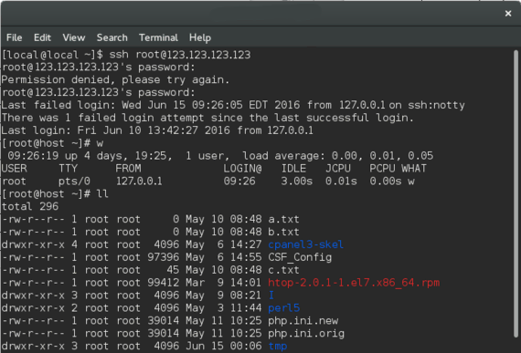

The Network Lab
The NE programming class has access to many technologies one of which is our network lab. This lab alows students to understand the basics of networking security and communication.

Understanding Systems
The NE netlab, allows students to tinker with corperation class software. This enables them to gain abilities in large scale networking and IT services. Including but not limited to, Apache 2, Linux Admin suite, Active Directory, and Hypervisors
Intergrated Programming
The netlab also serves as an inproduction code simulator. This allows our students to practice how to push, sync, and debug live code and ensure no security threats are active in a protected enviroment.